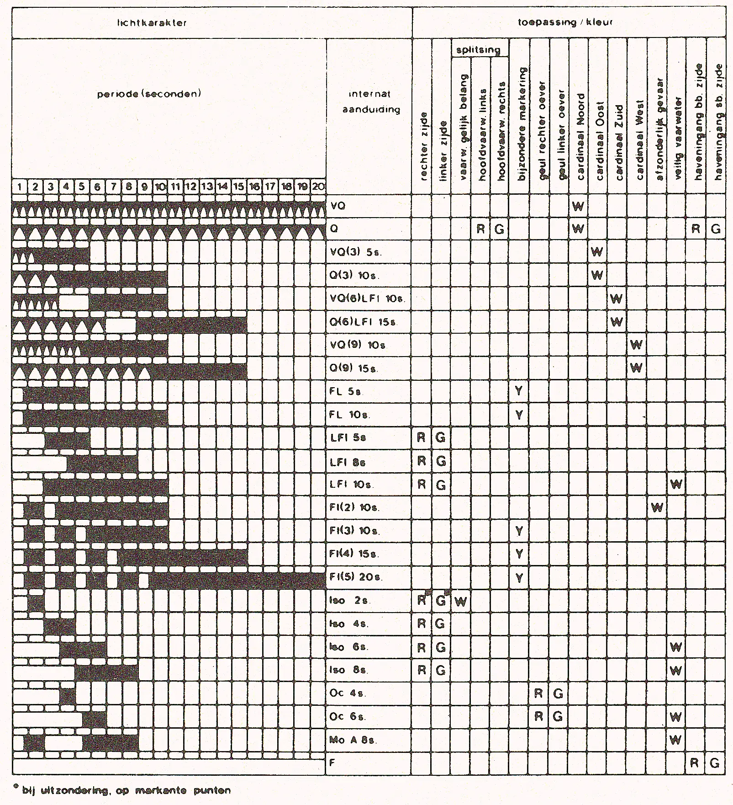

1 ALGEMEEN
1.1. Principes van het systeem
De hierna weergegeven markering van het vaarwater is gebaseerd op het uniforme Europese systeem (SIGNI), waarin een aantal elementen van het Maritieme Betonningsstelsel A (IALA) is overgenomen. Deze beide stelsels sluiten derhalve op elkaar aan, evenwel met uitzondering van de scheidingsmarkeringen (2.1.3). Hiervoor is in het BPR-gebied het van ouds bekende principe van de - ook in SIGNI gehandhaafde - bolvorm aangehouden.
1.2. De begrippen rechts en links
In verband met de nagestreefde uniformiteit van alle Europese binnenvaartreglementen is de plaats van de markeringen vermeld ten opzichte van de rechter, respectievelijk de linker oever of zijde van de vaarweg of het vaarwater. Hieronder wordt verstaan de oever of zijde gelegen rechts, respectievelijk links van een waarnemer die kijkt in de hierna aangegeven richting:
a. op rivieren, zowel vrijstromende als gekanaliseerde: in stroomafwaartse richting, in getijgebied in de richting van de ebstroom;
b. op kanalen: in het algemeen eveneens "van boven naar beneden" gerekend, d.w.z. in de richting van een lager gelegen pand;
c. op zijvaarten en -geulen: in de richting van de hoofdvaarweg, respectievelijk de hoofdgeul;
d. op meren, afgesloten zeearmen e.d., evenals in de geulen daarin voor zover die geen onderdeel zijn van een doorgaande route: in de richting van de uitgang naar zee of open water;
e. op de randmeren van Flevoland: gerekend vanaf Amsterdam;
f. in de zeegaten en de aansluitende hoofdgeulen: in de richting van de Noordzee.
In gevallen die niet zonder meer duidelijk zijn wordt door de vaarwegbeheerder vastgesteld wat onder rechts en links wordt verstaan.
Opmerking
Hoewel de hiervoor vermelde richtingen tegengesteld zijn aan het in maritieme publicaties gehanteerde begrip "betonningsrichting" met de daaraan gekoppelde bakboords- en stuurboordszijde van een schip, maakt dit geen verschil uit in de positie van de stompe en de spitse markeringen.
1.3. Markeringsvoorwerpen
De betekenis van de markering is afhankelijk van één of meer van de volgende kenmerken:
des daags: vorm, topteken en kleur,
des nachts: kleur en karakter van het licht.
De toegepaste betonningsvoorwerpen (licht)boei, ton, sparboei, drijfbaken, kopbaken en steekbaken geven tevens een indicatie over de belangrijkheid van een vaarwater, m.a.w. de betonningsvoorwerpen zijn groter naarmate het vaarwater belangrijker is.
1.3.1. Vorm en topteken
De hoofdvormen van de laterale markeringen en van de daarbij behorende toptekens zijn stomp (rechter zijde), spits (linker zijde) en bolvormig (splitsingen); alleen de bijzondere markering kan een bijzonder topteken hebben.
Lateraal gebruikte sparboeien zijn in Nederland eveneens stomp en spits van vorm.
Indien een betonningsvoorwerp niet de vereiste stompe, spitse of bolvorm heeft dan wordt die vorm aangegeven door het bijbehorende topteken (cilinder, kegel, bol).
Drijf- en kopbakens zijn altijd van een topteken voorzien, tonnen en sparboeien alleen wanneer zulks ter onderscheiding nodig wordt geacht (b.v. in een bocht, ter onderbreking van een rij éénvormige tonnen, aan het begin of het einde van een vaarwater).
Bij steekbakens wordt de stompe vorm gesuggereerd door de losse takken, de spitse door de bijeen gebonden takken. Een splitsing wordt hierbij meestal aangegeven door twee of drie steekbakens bij elkaar. Cardinale markeringen en de markering afzonderlijk gevaar hebben geen specifieke vorm, het voornaamste kenmerk hiervan is het topteken.
1.3.2. Kleur
Voor de laterale betonning en de oevermarkering zijn de hoofdkleuren rood aan de rechter zijde, groen aan de linker zijde en een combinatie van beide bij splitsingen.
Geel-zwart is kenmerkend voor de cardinale markering, geel voor de bijzondere markering.
De markeringen afzonderlijk gevaar en veilig vaarwater zijn duidelijk afwijkend.
Markeringsvoorwerpen kunnen zijn voorzien van retroreflecterend materiaal, waarvan de kleur overeenkomt met die van de betreffende markering.
De kleuren worden internationaal aangeduid met de Engelse afkortingen R (red), G (green), W (white), Y (yellow) en B (black).
1.3.3. Lichten
De betekenis der lichten blijkt uit de kleur en het karakter. Bij de laterale en de oevermarkering komt de kleur overeen met die van het markeringsvoorwerp: rood aan de rechter zijde en groen aan de linker zijde; het karakter is "rustig".
Een splitsing van hoofd- en nevenvaarwater toont eveneens rood of groen licht (voor het hoofdvaarwater), van vaarwaters van gelijk belang wit; het karakter is in beide gevallen snel.
Bij de bijzondere markering is het licht evenals de betonning geel, het karakter is altijd schitter of groepschitter.
De cardinale markering is duidelijk herkenbaar aan de witte (groep) flikkerlichten.
De markering afzonderlijk gevaar toont altijd een wit groepschitterlicht (2 schitteringen).
Het licht van de veilig vaarwater markering is eveneens steeds wit, met een duidelijk langzaam karakter.
Lichtkarakters
Lichten worden in grote lijnen onderscheiden in vaste lichten en periodelichten.
Een vast licht toont een ononderbroken schijnsel van gelijkmatige sterkte. Vaste lichten worden, behalve als navigatieverlichting, in beginsel gebruikt als verkeerstekens (zie bijlage 7).
Bij een periodelicht wordt het schijnsel regelmatig afgewisseld met één of meer verduisteringen. Periodelichten dienen in principe voor de markering van het vaarwater.
Onder de periode van een licht wordt verstaan de tijdsduur waarin éénmaal alle fasen van het licht worden doorlopen, derhalve de totale duur van schijnsel(s) en verduistering(en). De periode wordt aangegeven in seconden en afgekort als s.
Het karakter geeft een nadere specificatie van een licht; het wordt volgens internationale afspraken aangeduid met de Engelse afkorting.
De karakters zijn gebaseerd op de volgende hoofdindeling;
karakter/omschrijving | int. benaming | int. afk. |
snelflikkerlicht: ononderbroken flikkeringen, 100 á 120 per minuut | very quick flash | VQ |
flikkerlicht: als boven, 50 á 60 per minuut | quick flash | Q |
groep(snel)flikkerlicht: een groep van 3, 6 of 9 (snelle) flikkeringen | group (very) quick flash | VQ (3) Q (6) enz. |
schitterlicht: schijnsel is korter dan verduistering | flash | Fl |
lang schitterlicht: als boven, met schittering van ten minste 2 sec. | long flash | LFl |
groep schitterlicht: een groep van 2, 3, 4 of 5 schitteringen | group flash | Fl(2) Fl(4) enz. |
isofaselicht: schijnsel is even lang als verduistering | isophase | Iso |
onderbroken licht: schijnsel is langer dan verduistering | occulting | Oc |
vast licht: ononderbroken schijnsel | fixed | F |
In Nederland worden voornamelijk de volgende karakters toegepast, waarbij in het algemeen geldt: hoe sneller het karakter, hoe gevaarlijker het te markeren punt.

1.3.4. Kentekens
Indien een markering is voorzien van een nummering dan loopt deze "van beneden naar boven", dus tegengesteld aan de onder 1.2 genoemde richtingen, op.
1.3.5. Winterbetonning
Gedurende de wintermaanden worden de bij ijsvorming kwetsbare lichtboeien en tonnen vervangen door gelijkgekleurde kleine tonnen, sparboeien of drijfbakens.